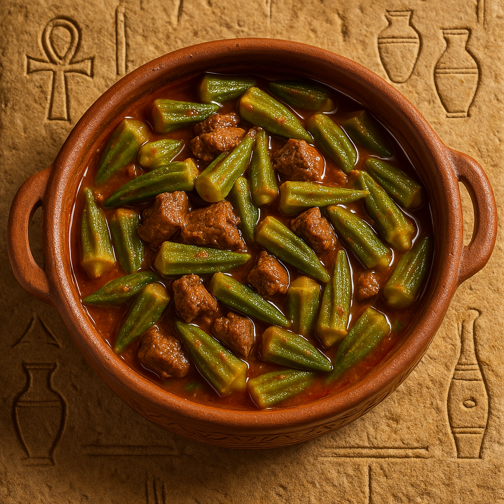

Rich Tomato Okra Delight
Bamia is a traditional Egyptian stew made with tender green okra simmered in a flavorful tomato sauce, often served with lamb or beef. It’s a cozy, satisfying dish perfect for family meals.
Ingredients:
- 500g okra (fresh or frozen)
- 300g beef or lamb (cubed)
- 1 large onion (chopped)
- 4 cloves garlic (minced)
- 3 cups tomato puree
- 2 tablespoons tomato paste
- 2 tablespoons vegetable oil
- Salt, pepper, and ground coriander to taste
Instructions:
- In a pot, heat the oil and sauté onions until golden. Add the meat cubes and cook until browned.
- Add garlic and tomato paste, stir for a minute, then add tomato puree and spices.
- Simmer until the meat is tender (about 45–60 minutes).
- Add okra and cook for another 20 minutes until soft.
- Serve hot with white rice or baladi bread.